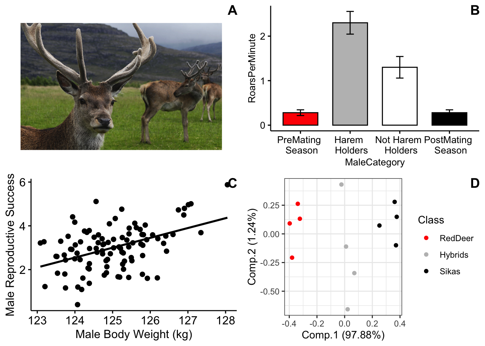
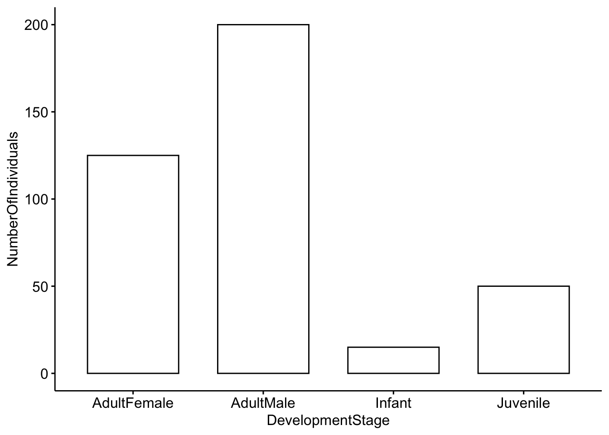
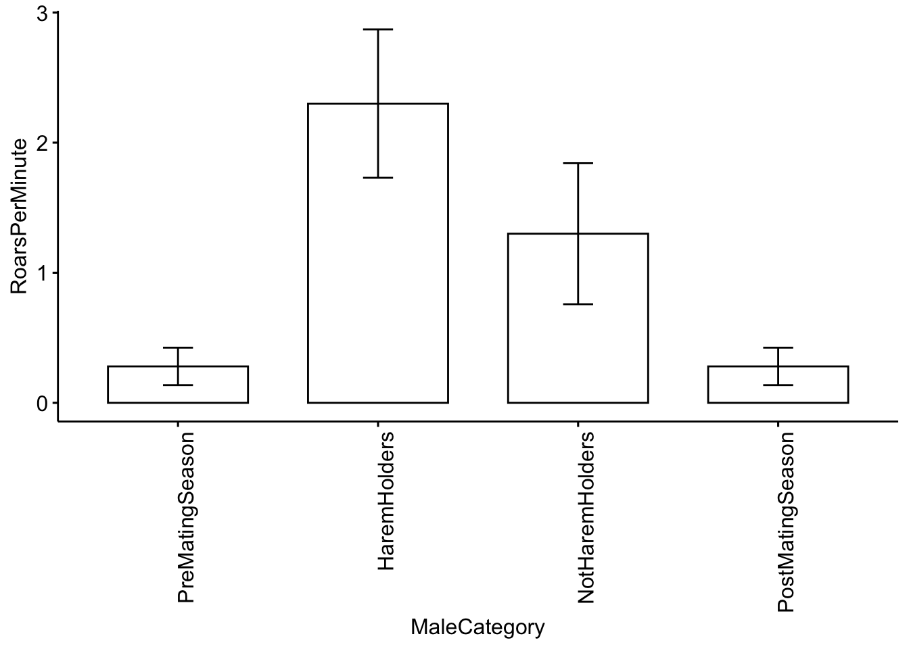
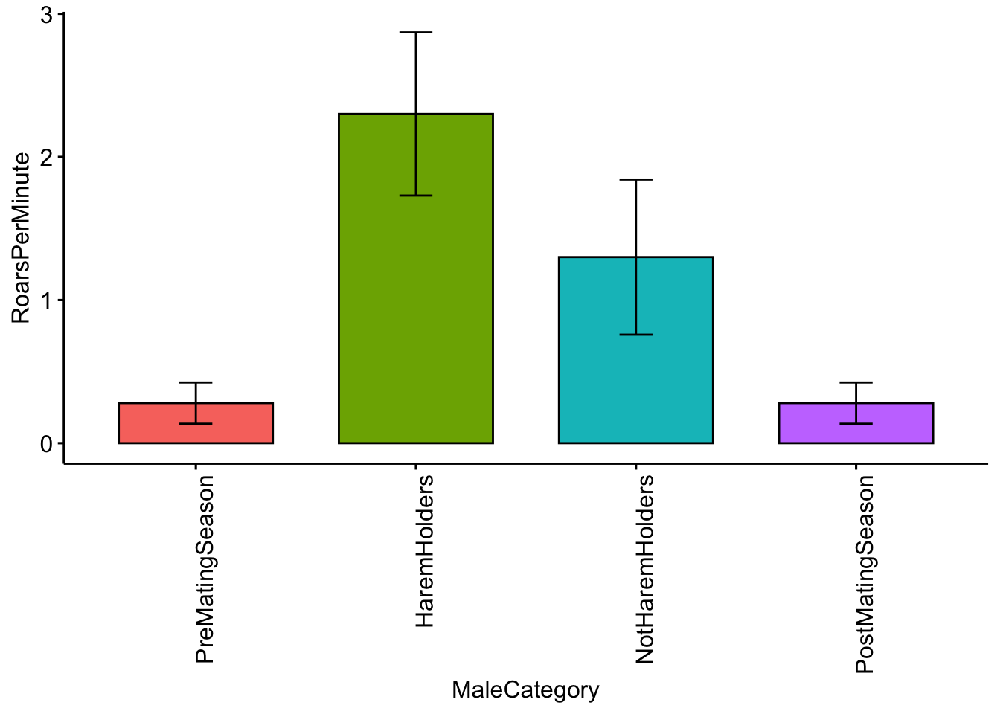
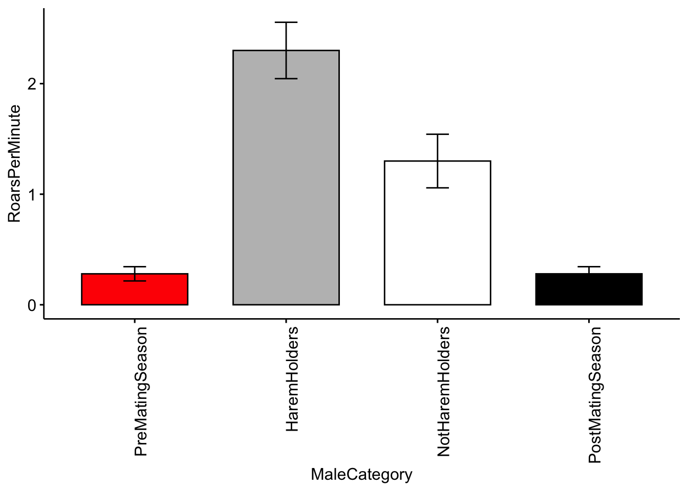
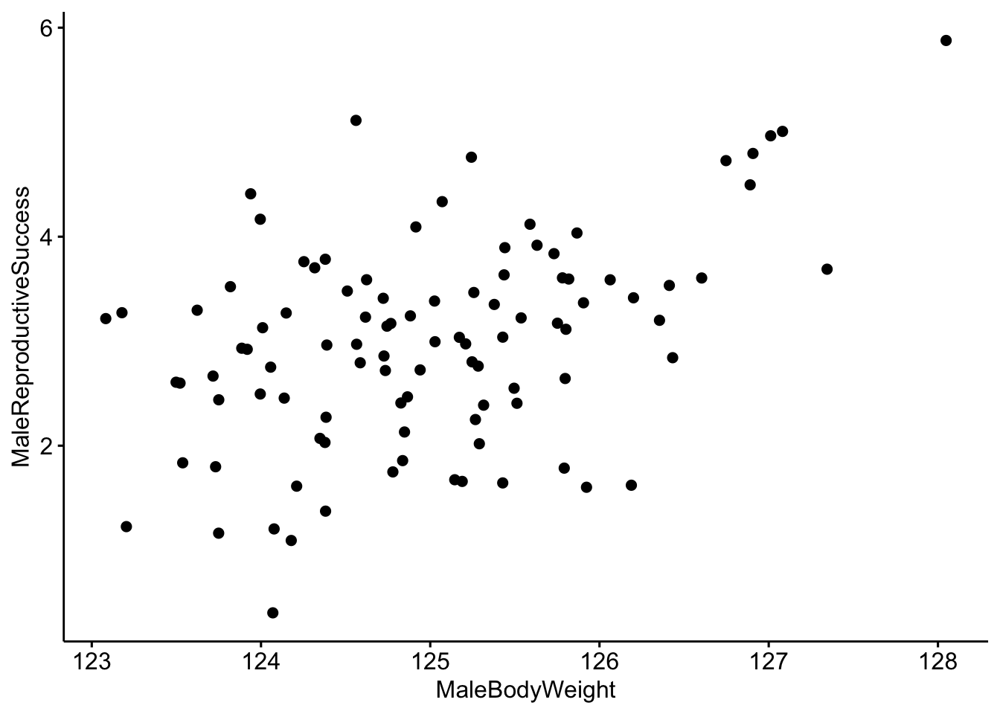
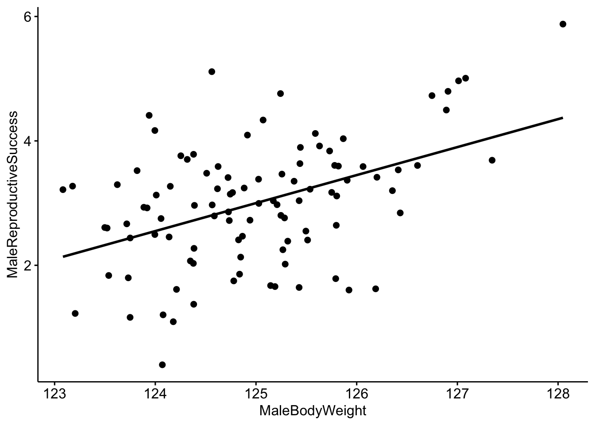
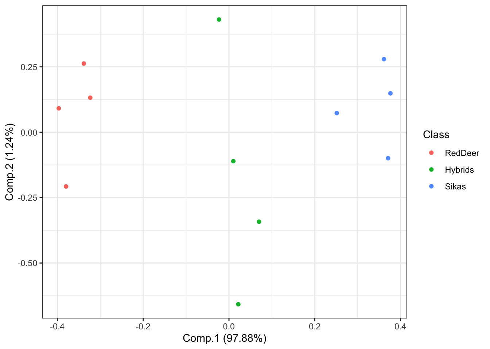
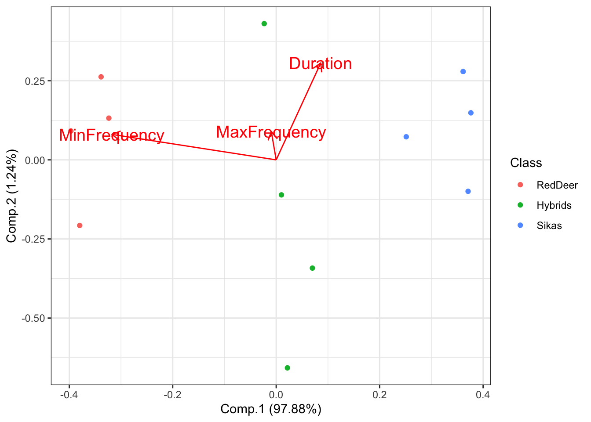

1 Lab 1. Data exploration and visualization

Background
Our examples will focus on roaring behavior in red deer. Red deer on Rum Island, Scotland form harems during the mating season. Harem holding males fight off other males during this time, and many of these males have signs of fighting injuries. Clutton-Brock and colleagues hypothesized that because of the injury associated with fights that red deer males should use honest indicators of each others fighting abilities, and that the main indicator of strength and fighting ability was the male roars.
For more background see: Clutton-Brock, Tim H., and Steven D. Albon. “The roaring of red deer and the evolution of honest advertisement.” Behaviour 69.3-4 (1979): 145-170.
Reby D, McComb K. Anatomical constraints generate honesty: acoustic cues to age and weight in the roars of red deer stags. Animal behaviour. 2003 Mar 1;65(3):519-30.
Long, A. M., N. P. Moore, and T. J. Hayden. “Vocalizations in red deer (Cervus elaphus), sika deer (Cervus nippon), and red× sika hybrids.” Journal of Zoology 244.1 (1998): 123-134.
Goals of the exercises
The main goal(s) of today’s lab are to:
1) teach you about different types of data visualization and types of data.
2) help you to start to become familiar with using R.
3) to get you to think about the ways that scientists analyze data.
Getting started
First we need to load the relevant package. Packages contain all the functions that are needed for data analysis. The ‘behaviouR’ package loads many other packages that have important functions.
Lab 1a. Categorical data
Categorical variables represent types of data that can be divided into groups. Our first example will census a simulated population of red deer to determine the proportion of individuals in different developmental stages.
## Lab 1a. Categorical data
# Here we create a simulated population with four categories (Infant, Juvenile, AdultFemale and AdultMale)
DeerPopulationDF <- data.frame(DevelopmentStage=c('Infant','Juvenile','AdultFemale','AdultMale'),
NumberOfIndividuals=c(15,50,125,200))
# We then print the object so that we can see the output
DeerPopulationDF## DevelopmentStage NumberOfIndividuals
## 1 Infant 15
## 2 Juvenile 50
## 3 AdultFemale 125
## 4 AdultMale 200Now we want to plot the data. We will use a simple barplot to start.
Throughout these tutorials we will use functions from the ‘ggpubr’ package for plotting; see https://rpkgs.datanovia.com/ggpubr/ for more details. For more information on the great work the developer is doing see http://www.alboukadel.com/ and http://www.sthda.com/english/.
# Now we want to plot the data. We will use a simple barplot to start.
ggbarplot(DeerPopulationDF, x='DevelopmentStage', y='NumberOfIndividuals')
Please answer the following questions:
Question 1. How would you interpret this figure? Which category has the most individuals, and which has the least?
Question 2a. This is a simulated popuation, but what do you think the ratio of males to females would mean for male-male competition?
Question 2b. Modify the code above so that our simulated deer population has a more even ratio of males to females.
Lab 1b. Categorical and continuous data
Our second example will investigate roaring rates in deer as a function of status and breeding season.The categories we will use are: pre-mating season, harem holder, not harem holder and post-mating season.Our outcome variable (mean number of roars per minute) is continuous; it represents actual numerical measurements.
I created a toy dataset which is based on Figure 2 in Clutton-Brock et al. 1979 where for each category we have five observations which represent the average number of calls per minute. For each category we have a total of five observations.
## Lab 1b. Categorical and continuous data
# Load the dataset so that we can use it
data("MaleDeerRoarDF")
# We can check the structure of the dataframe by using the command 'head'
head(MaleDeerRoarDF)## MaleCategory RoarsPerMinute
## 1 PreMatingSeason 0.25
## 2 PreMatingSeason 0.50
## 3 PreMatingSeason 0.25
## 4 PreMatingSeason 0.30
## 5 PreMatingSeason 0.10
## 6 HaremHolders 2.50Now we will plot the categorical data. First we will use a barplot with error bars representing the standard deviation. See https://www.biologyforlife.com/interpreting-error-bars.html and https://www.biologyforlife.com/standard-deviation.html for more information about error bars.
# Now we will plot the categorical data with standard deviations.
ggbarplot(MaleDeerRoarDF, x='MaleCategory', y='RoarsPerMinute',
add = c("mean_sd"),xtickslab.rt = 90)
Although it shows us what we need, we can also include some colors in our plot. To do this I added the ‘fill = ’MaleCategory’ argument, which tells R to color the plot based on male categories.
# Now we will plot the categorical data with colors for each category.
ggbarplot(MaleDeerRoarDF, x='MaleCategory', y='RoarsPerMinute', fill = 'MaleCategory',
add = c("mean_sd"),xtickslab.rt = 90)
Color for plots is often based on personal preference, below I modified the colors using the ‘palette’ argument. NOTE: The use of color-blind friendly palettes is becoming increasingly popular among scientists.
# Now we will plot the categorical data with user-specified colors for each category.
ggbarplot(MaleDeerRoarDF, x='MaleCategory', y='RoarsPerMinute', fill = 'MaleCategory',
palette = c('red','gray','white','black'),
add = c("mean_se"),xtickslab.rt = 90)
Please answer the following questions:
Question 3. How do you interpret the barplot figure?
Question 4. Visit this site (http://www.stat.columbia.edu/~tzheng/files/Rcolor.pdf) and change the colors of the plot. Hint: change ‘palette = c(’red’,‘gray’,‘white’,‘black’)‘to ’palette = c(’color1’,‘color2’,‘color3’,‘color4’)’.
Lab 1c. Categorical and continuous data
Continuous data represent numerical measurements, and when both our variables of interest are continuous we can plot them in a different way.
For this example we will consider the relationship between male red deer body weight (in kilograms) and male reproductive success (which is estimated by the number of days that he associated with females during the breeding season).
Below we have a function that will simulate data for us, and we can specify the level of correlation.
We also assign a mean body weight for males in our population (I got this value from ). We can also change the male reproductive success value. Our starting correlation value between these two variables is that reported in Reby & McComb 2003.
## Lab 1c. Categorical and continuous data
# This is the function that simulates our data. N is the number of individuals,
# CorrelationCoefficient tells us how correlated our data are,
# MaleMeanBodyWeight is the mean body weight of males in our population and
# MeanFemalesInHarem is the mean number of females in the harem.
MaleRedDeerDF <- CorrelatedDataSimulationFunction(N=100,
CorrelationCoefficient= 0.45,
MaleMeanBodyWeight = 125,
MaleReproductiveSuccess = 3)
# We can check the output
head(MaleRedDeerDF)## MaleBodyWeight MaleReproductiveSuccess
## 1 125.2576 3.466009
## 2 125.1888 1.658102
## 3 124.7266 2.858253
## 4 124.1372 2.455370
## 5 125.4283 1.643711
## 6 124.3844 2.272255Now we plot the data the data as before, but this time we make a scatterplot
# Make a scatterplot of the data.
ggscatter(data=MaleRedDeerDF,x='MaleBodyWeight',y='MaleReproductiveSuccess')
It looks like there is a correlation between our two variables, but it would be better visualized with a trend line.
# Make a scatterplot with a trendline.
ggscatter(data=MaleRedDeerDF,x='MaleBodyWeight',y='MaleReproductiveSuccess',
add='reg.line')
Now we can use R to create a linear model to quantitatively investigate the relationship between our two variables
# Create a linear model where MaleBodyWeight is the independent variable
# and FemalesInHarem is the dependent variable.
MaleDeerModel <- lm(MaleReproductiveSuccess ~ MaleBodyWeight,data=MaleRedDeerDF)We can look at the output of the model and we see that our coefficient for MaleBodyWeight is 0.83. We interpret this to mean that for every 1 kg increase in male body mass, we would expect to see a 0.83 increase in the number of females in his harem.
##
## Call:
## lm(formula = MaleReproductiveSuccess ~ MaleBodyWeight, data = MaleRedDeerDF)
##
## Coefficients:
## (Intercept) MaleBodyWeight
## -53.25 0.45There are many ways that we can test whether the results of our model are reliable. A common way is through the use of p-values; a somewhat more intuitive way is through the use of model comparison using Akaike information criterion (AIC). AIC provides an estimate of how well the model fits the data.
NOTE: AIC can be used to compare two our more models created using the same dataset, but the relative AIC values are what is important, and you must use the same data for all models.
We will set up two models for this exercise. Our first model will be our ’null’model which does not include MaleBodyWeight as a predictor. Our next model will be our model of interest that does contain MaleBodyWeight as a predictor.
# Create a null model and a model with MaleBodyWeight as a predictor.
MaleDeerNull <- lm(MaleReproductiveSuccess ~ 1, data=MaleRedDeerDF)
MaleDeerModel <- lm(MaleReproductiveSuccess ~ MaleBodyWeight,data=MaleRedDeerDF)We can now use a function created to compare models using a modified version of AIC (adjusted for small sample sizes).
## dAICc df weight
## MaleDeerModel 0.0 3 1
## MaleDeerNull 20.5 2 <0.001NOTE: In this example case the model which contains MaleBodyWeight is ranked higher. We interpret this to mean that there is a reliably positive relationship between MaleBodyWeight and MaleReproductiveSuccess. In other words, as male body weight increases we see an increase in his reproductive success.
Please answer the following questions:
Question 5a. What happens when you change the correlation coefficent from 0.45 to a much smaller number and re-run the code?
Question 5b. What about when you change it to a much bigger number?
Lab 1d. Multivariate data
In some cases we have multiple measurements of different variables from the same individual; in this case our data would be considered ‘multivariate’.
Lets create a toy dataset of red deer, sika deer and red x sika hybrid vocalizations (based on Long et al. 1998). We will simulate four vocalizations per individual and we will measure three aspects of the vocalizations- the duration, the minimum frequency and the maximum frequency of the vocalization. We will then visualize our data using principal component analysis (PCA). PCA is a commonly used data reduction technique.
For more information see https://www.nature.com/articles/nmeth.4346.pdf.
## Lab 1d. Multivariate data
# Just as before we load our data
data("DeerSpeciesAcousticFeatures")
# Check the structure
head(DeerSpeciesAcousticFeatures)## Duration MinFrequency MaxFrequency Class
## 1 15 50 125 RedDeer
## 2 14 49 127 RedDeer
## 3 12 51 126 RedDeer
## 4 13 52 127 RedDeer
## 5 17 35 125 Hybrids
## 6 19 37 126 HybridsNow we run the PCA. Note: You can only do PCA on numeric data, so we remove the class category.
## Duration MinFrequency MaxFrequency
## 1 15 50 125
## 2 14 49 127
## 3 12 51 126
## 4 13 52 127
## 5 17 35 125
## 6 19 37 126
## 7 15 34 123
## 8 16 32 127
## 9 21 20 125
## 10 22 20 126
## 11 23 21 124
## 12 20 25 127# Run the PCA using the 'princomp' function
DeerSpeciesAcousticFeaturesPCA <- princomp(DeerSpeciesAcousticFeatures[,-c(4)])Then we will plot the results NOTE: each point represents one roar and the colors represent the class category.
# Plot the results of our PCA.
ggplot2::autoplot(DeerSpeciesAcousticFeaturesPCA, data = DeerSpeciesAcousticFeatures, colour = 'Class',
loadings = FALSE)+theme_bw()
What if we are interested in which features best distinguish between our groups? We can visulize this using the following code:
# Plot the PCA with arrows indicating which features are important for distinguishing between groups
ggplot2::autoplot(DeerSpeciesAcousticFeaturesPCA, data = DeerSpeciesAcousticFeatures, colour = 'Class',
loadings = TRUE, loadings.colour = 'red',
loadings.label = TRUE,
loadings.label.size = 5)+theme_bw()
This shows that the feature that best distinguishes between red deer and sika is the minimum frequency of their vocalizations. If you look on the x-axis (Comp.1) you can see that there is a substantial amount of separation between these groups.
Please answer the following questions:
Question 6. In your own words, explain why we would want to use PCA for data visualization? What can we learn about the data when it is visualized this way?